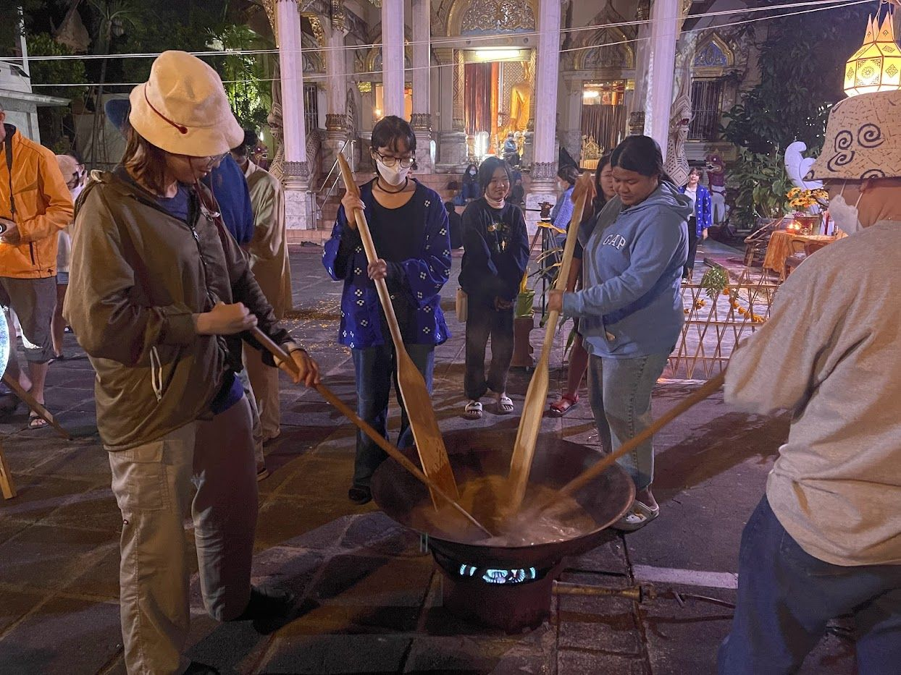

Midnight Rice Festival (คน.ข้าวยาคู้.ช้างม่อย) is an annual festival in the Chang Moi community of Chiang Mai, built around the khao yakhu ritual at Wat Chomphu: on the night before Yi Peng, sweet rice is stirred from midnight and offered at dawn. Around the ritual the temple becomes a gallery, with multimedia art, live visuals on its architecture, talks, a night market, music and walking tours. First held in 2021, it returns every November, made by tomorrow.lab with the Chang Moi community and the Faculty of Architecture, Chiang Mai University.